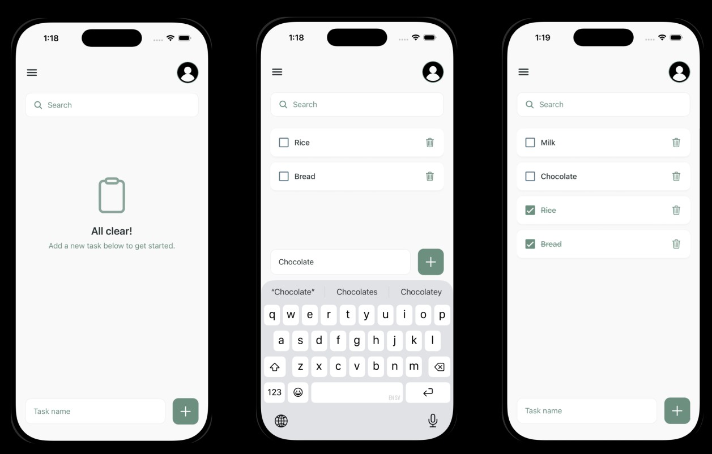

A cross-platform solution developed to explore the trade offs between different mobile environments. Built with React Native and TypeScript, the project serves as a practical application of modern software engineering principles, ensuring a consistent UX across multiple platforms while leveraging native OS features for optimal performance.

Built with TypeScript to ensure reliability and scalable code.
Unified UX and logic across both iOS and Android environments.
Optimized using the Expo ecosystem for smooth interactions and fast load times.
Building TaskMaster was an exercise in identifying the most efficient framework for modern cross-platform needs. By choosing React Native and TypeScript, I was able to implement type safe architectures that enhance code reliability. The project deepened my understanding of the entire development lifecycle from evaluating development environments to testing and planning for multi platform deployment. It also allowed me to explore the shift towards highly performant, modular mobile architectures.